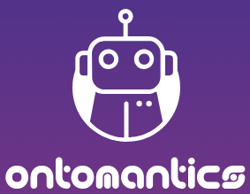

1ère conférence:
Timetonic
Timetonic est une plateforme cloud de gestion collaborative avec ses propre bases de données visuelle intelligente, et cela grace à une approche NoCode Data-First interessante à utiliser avec l'IA. Au lieu de developper une application
de a à z ils se sont concentrer sur le point commun aux app. métiers pour créé leur propre solution. Le point commun étant la donnée plus particulièrement sa gestion, ils ont créé un nouveau type de plateforme ,qui se base dessus,
et est tout aussi flexible et puissante. Avec l'IA qui permet l'automatisation et le NoCode qui s'occupe de gérer les données et ajouter des processus, on peut générer des boucles d'interaction comme par exemple formater des numéros
de contact ou des emails selon des critères ou bien extraire des données à partir d'images et gérer les documents en interne ce qui est très utile en maintenance ou pour les cartes de visite par exemple. Dans la plateforme il y
a plusieurs vues possibles afin de garder la confidentialité des données sensibles en resteignant l'accès en filtrant la vu grace à l'IA et le RAG (Récupération augmentée par génération). C'est une solution interne sécurisée qui
permet de diviser ou isoler des données pour créé des nouvelles vues filtrées par critère, il y a donc une nouvelle vue IA qui héberge ses propres données sécurisées en RAG en créant une base de données spécifique pour que lors
d'une requette les documents consernés soit extrait vers le LLM qui transmet une réponse spécifique en utilisant les données dans un contexte etandu qui peut être utiliser dans tous les secteurs comme dans l'analyse risque, les
devis ou l'aide aux agents support. Timetonic est donc une solution privé, sécurisé et souveraine qui centralise les informations dans une base de donné, automatise les processus grace à l'IA et cré une application cloud, mobile
avec accès à des médias offline et qui permet de gérer le front, back, et les utilisateurs.
2ème conférence:
Ontomantics
Ontomantics est une start-up qui utilise un système NoCode et IA afin d'améliorer les performances en créant des applications métier sur mesure. Cette plateforme permet à l'utilisateur de créer et customiser une application sans code
qui répond à ses besoins. Grace à la collecte de données et création de bases on accélère et simplifie le processus de developpement. L'IA joue le role principale dans le developpement, un chatbot est intégré à l'interface et répond
aux besoins de l'utilisateur en lui posant des questions spécifiques. Il cré donc de son coté les composants; les modèles de données, l'interface, planifie les taches et met en place les droits d'utilisateur tout ça en interprétant
les réponses de l'utilisateur et les traduisant en code pour créé le site/application qui est 100% gérable par l'utilisateur de la securité jusqu'aux parametres.

3ème conférence:
Diversité, inclusion et exclusion dans le domaine du numérique
Le domaine du numérique a évolué très rapidement et est omniprésent dans nos vies quotidienne mais le problème de diversité et d'inclusion des femmes ou senior reste toujours présent. A cette table ronde réunissant Juliette Delas, Peggy
Vicomte, Houcine Menacer, Cristina Lunghi et Alexandra André on parle du futur du domaine numérique et plus particulièrement son potentiel à être un moteur de diversité. Durant le Covid l'IA c'est developpé 3 fois plus rapidement et
c'est répendue beaucoup plus ce qui a mené à la création d'algorithmes biaisé par exemple une entreprise qui l'utilise pour le recrutement qui n'embauchait que des hommes du même profil car l'IA n'est pas une réel intelligence a part
entière c'est l'homme qui la façonne, elle est donc le reflet de la société patriarcale dans laquelle nous vivons. L'IA n'est pas le problème c'est la vue de la société qui depuis des decénnies exclue les femmes et les seniors, vu
comme pas apte pour ce genre de travail, il y a seulement 15% de femmes et 2,4% de senior dans le domaine du numérique, ces chiffres sont alarmants car c'est un secteur qui commence à se developper et est en recherche de talents. Des
innovations sont donc nécessaires car il y a un impact social important par exemple dans le secteur automobile ou les crash tests sont basé sur la morphologie des hommes rendant les accidents plus mortels pour les femmes (elles ont
environ 17% plus de chance de mourrir dans un accident de voiture), cela nous montre un gros problème de représentation tout comme dans les contenus visionnés qui sont à 90% créé par des hommes. Cette sous-représentation continue alors
dans les entreprises qui recherche toujours le même profil par fermeture d'esprit ou raison économiques car les femmes on besoin de congées maternité et on un cycle menstruel ce qui influence sa présence au travail et les senior coûte
plus chère et peuvent avoir des maladies étant agés. Le but est de tendre vers une diversité intersex et intergénérationnel grace à des formations, des outils et des programmes fait pour l'insertion ou réinsertion professionnelle,
afin de redonner de la vision et du savoir-faire. Mais des efforts de la part des entreprises sont aussi attendus, évoluer dans l'ère du temps et créé de nouvelles solutions sans pour autant le forcé pour ne pas amener à du senior-washing
par exemple. L'évolution du numérique et de l'IA accélère et il est important de sensibiliser avec la création de chartes par exemple la carte internationnale du respect de la diversité d'Arborus et femme@numérique. TheFrenchTech propose
par exemple un tremplin pour les personnes en situation d'handicap ou des réfugiés ou senior afin de les préparer à l'entreprenariat et les résultats sont concluants avec plus de 88% de sorties positives dont plus 1/2 dans l'entreprenariat
ou le travail comme Angélique Cadet fondatrice de TikTak et role model des +50ans.
Sujets marquants
Le domaine numérique est en pleine expansion, mais il demeure marqué par des problématiques de diversité et d'inclusion, notamment envers les femmes et les seniors, qui sont sous-représentés (15% de femmes, 2,4% de seniors). En parallèle,
l'intelligence artificielle, dont le développement s'est accéléré durant le Covid, amplifie parfois les biais de notre société. Par exemple, des algorithmes de recrutement biaisés favorisent des profils masculins similaires, car ils
reproduisent les préjugés humains intégrés lors de leur création. Ce problème souligne l'importance d'une plus grande diversité dans le développement technologique pour éviter de perpétuer ces biais. Timetonic est une plateforme de
gestion collaborative cloud, conçue pour une gestion de données intelligente, grâce à une approche NoCode orientée "Data-First" et intégrant l'IA. Au lieu de développer une application de A à Z, Timetonic se concentre sur la donnée,
élément commun aux applications métiers, et propose un outil flexible et puissant pour la gestion des données et des processus internes. Avec l'IA, la plateforme permet des automatisations, comme la mise en forme automatique de numéros
de téléphone ou l’extraction de données d’images, utile en maintenance ou pour gérer des documents. Elle propose aussi des vues restreintes pour gérer la confidentialité des données grâce à des filtres IA et RAG (Récupération augmentée
par génération), créant ainsi une base de données spécifique et sécurisée pour différents usages, tels que l'analyse de risques et l’aide aux agents de support. Ontomantics utilise également une approche NoCode et IA pour développer
des applications métier sur mesure, simplifiant la création d'applications sans code. Son IA guide l’utilisateur par un chatbot intégré, collectant les besoins et créant des composants (modèles de données, interfaces, droits d'accès),
rendant ainsi le processus accessible à des utilisateurs non techniques et leur permettant de gérer l’ensemble des paramètres de l'application, y compris la sécurité et les droits utilisateur.